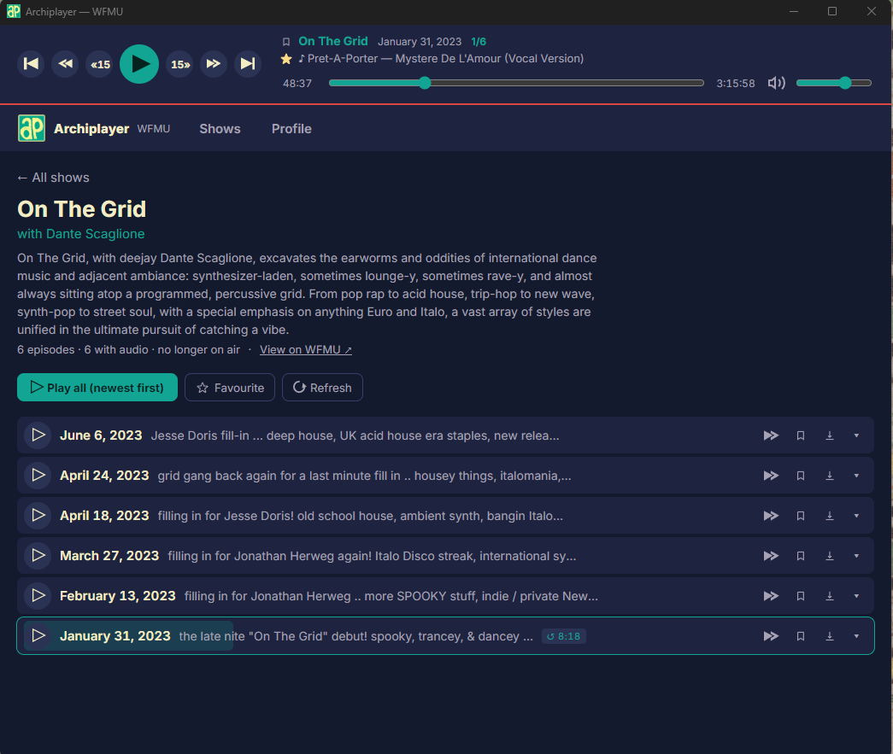
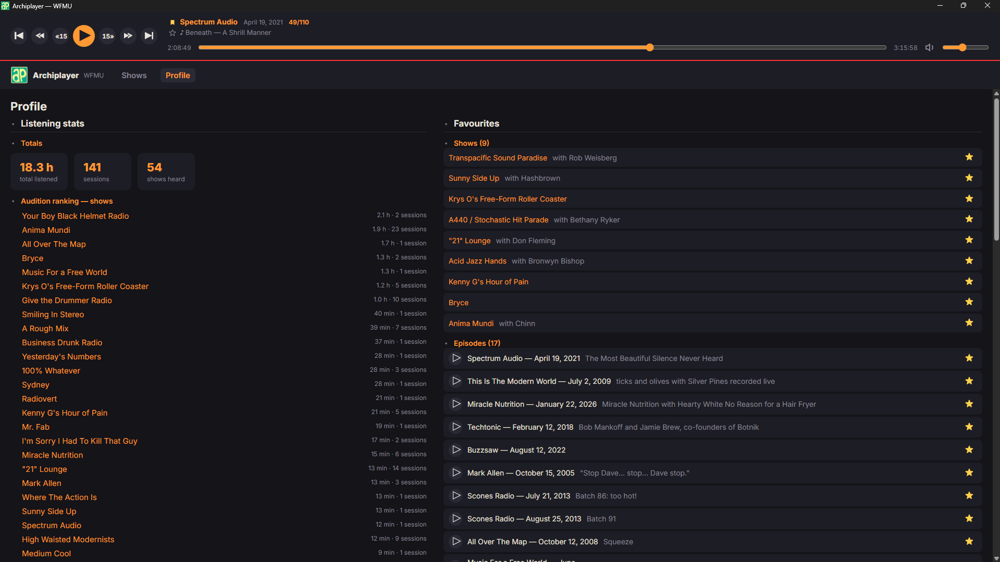
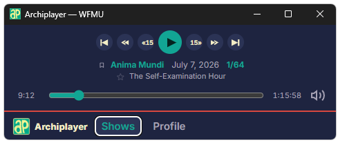
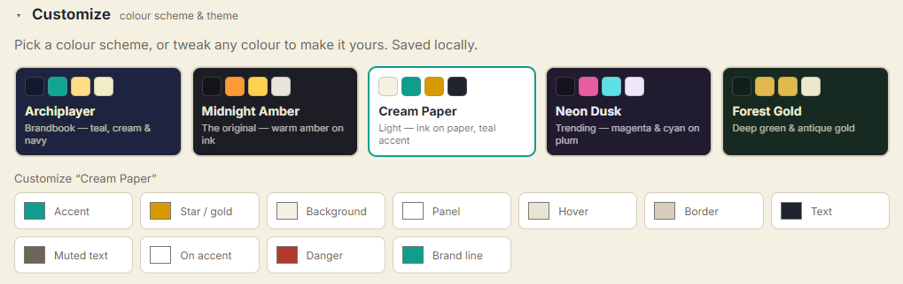

Find your favourite show
Browse every current and past show. Search DJs instantly and search tracks as playlists enter your local cache (Because we are mindful of web traffic).
LOCAL-FIRST · OPEN SOURCE
A fast desktop library for decades of WFMU broadcasts. Search the catalogue, follow playlists, save favourites and take episodes offline; without an account or a cloud.
Free community builds for Windows, macOS and Linux.

RADIO SHOULD FEEL LIKE DISCOVERY.
“Browse, listen and save all in one place”
01 / What it does
Browse every current and past show. Search DJs instantly and search tracks as playlists enter your local cache (Because we are mindful of web traffic).
Queue whole shows, single episodes or jump straight to a track’s timestamp. Resume where you stopped.
Download episodes for travel and slow connections. Choose where the files live; delete them whenever you like.
Favourite shows, episodes and songs. Listening history and stats stay in one SQLite file on your machine.



02 / Get Archiplayer
These early community builds are unsigned. The source is public, but Windows and macOS will ask you to confirm that you trust the app. BTW - It works for me, so in any case - open an issue pls!
Windows 10 or later · x64
Download .exeChoose More info, verify that the download came from this repository, then choose Run anyway.
Intel + Apple Silicon · universal
Download .dmgMove Archiplayer to Applications. Control-click it and choose Open, then confirm once.
Debian/Ubuntu or AppImage · x64
Linux downloadsMark the file executable, then run it: chmod +x Archiplayer*.AppImage
BUILD IT YOURSELF
Prefer not to run an unsigned binary? Follow the build walkthrough in the repository.